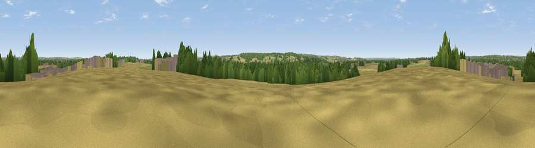

Viewpoint near Barrow upon Trent
#37648 in England · top 67% of its area beats it · near Barrow upon Trent · access?Where it is
The exact computed spot (SK 35251 29486). Click the marker for map links.
Public access: no public right of way or access land is recorded at this exact spot — it may be on private land. Computed from Natural England's CRoW access layer and OpenStreetMap rights of way — not the legal definitive map. Always verify locally.
The view, rendered

A 360° render of this exact spot computed from the terrain model, tree cover and land cover — summer colours, afternoon light, calibrated against photographs of famous viewpoints. Real trees, hedges and buildings will differ in detail.
The panorama
Grey silhouette: terrain skyline in each direction (720 bearings, Earth curvature and refraction included). Dashed green: skyline with trees (+15 m) and buildings (+8 m) as obstacles. Blue strip: how far the ground is visible on each bearing.
Where the view opens
Wedge length = distance to the farthest visible ground on that bearing (vegetation-aware). Rings at 10, 25 and 50 km.
What fills the view
39% cropland · 31% grassland · 19% woodland · 10% built-up ·
Angular shares of the visible panorama (visual magnitude), not map area. Landscape diversity 0.58 (0–1 Shannon).
Key numbers
More beautiful places nearby
The staircase of upgrades: each row has a higher view potential than everything closer. Driving times are estimates from straight-line distance, calibrated against real road routing — check an actual route before setting out.
| Place | Direction | Drive | Score |
|---|---|---|---|
| Viewpoint near Repton | WSW · 5 km | ~10 min | 51.1 |
| Viewpoint near Weston-on-Trent | ESE · 6 km | ~13 min | 54.2 |
| Viewpoint near Hartshorne | SSW · 8 km | ~16 min | 57.6 |
| Viewpoint near Risley | NE · 13 km | ~23 min | 57.7 |
| Viewpoint near Little Eaton | N · 13 km | ~23 min | 63.4 |
| No Man's Lane | NE · 13 km | ~24 min | 65.8 |
| Viewpoint near Whitwick | SE · 16 km | ~28 min | 71.2 |
| Ives Head | SE · 18 km | ~31 min | 73.3 |
52.86171, -1.47787 · source: osm peak · position refined by local search. Computed location — check access rights before visiting.